R heeft een zestal ingebouwde diagnostische grafieken voor lineaire regressie.
Residuals vs Fitted
Normal Q-Q
Scale-Location
Cook’s distance
Residuals vs Leverage
Cook’s dist vs Leverage
R kan deze grafieken produceren wanneer je de functie plot() uitvoert op een object van een lineair lm model. In feite wordt dan de functie plot.lm() uitgevoerd. Het gewenste grafieknummer kun je specificeren met argument which=. Wanneer het argument which wordt weggelaten worden standaard de grafieken 1, 2, 3 en 5 gemaakt. Hiervan zijn de eerste twee het belangrijkst, maar de laatste twee kunnen goed helpen bij het identificeren van uitschieters en het niet-lineair zijn.
Voor het maken van vergelijkingen met een ideaal model wordt een gegevensverzameling gemaakt welke perfect voldoet aan alle standaardeisen voor lineaire regressie. De data wordt gegenereerd voor de lineaire vergelijking
\[y_i = 3 + 0.1 x + \epsilon_i,\]
met \(i = 1, 2, \ldots, 1000\), met \(\epsilon_i \sim N(0, 3)\).
De x-waarden worden gegenereerd uit een uniforme verdeling [0, 100]
n <-500# aantal waarnemingenset.seed((12345))x <-runif(n, min =0, max =100)y.ideaal <-3+0.1* x +rnorm(n, sd =3)# ideale lineaire modellm.ideaal <-lm(y.ideaal ~ x)plot(x, y.ideaal, main ="ideaal lineair model")abline(lm.ideaal, col ="blue") # regressielijn toevoegen
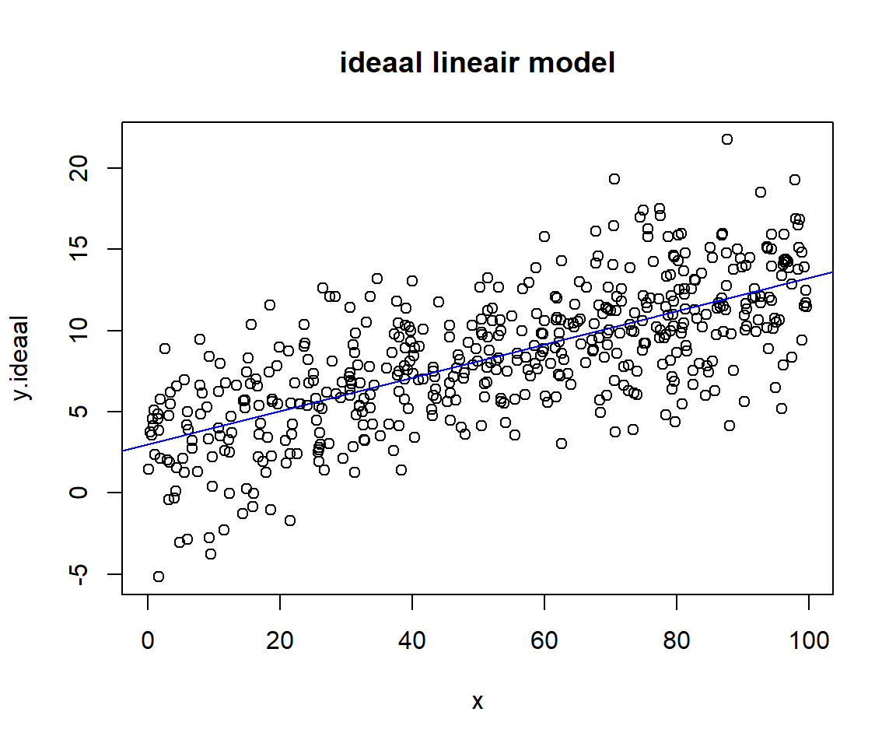
Figuur 2.1: Spreidingsdiagram voor een ideaal lineair model met regressielijn.
Het spreidingsdiagram toont een perfecte lineaire regressie: de punten lijken willekeurig verspreid over de lijn, zonder waarneembare niet-lineaire trends of niet-constante variantie.
2.1.1 Residual vs. Fitted
In deze grafiek worden de residuen uitgezet tegen de voorspelde waarden. Idealiter mag deze grafiek geen patroon vertonen. Wanneer je wel een patroon (curve, U-vorm) ziet dan suggereert dit niet-lineariteit in de dataset. Als je gelijk verdeelde residuen rond een horizontale lijn vindt zonder duidelijke patronen, is dat een goede indicatie dat je lineaire relaties hebt. Als je bovendien een trechtervormig patroon ziet, dan suggereert dit heteroskedasticiteit, d.w.z. dat de fouttermen een niet-constante variantie hebben.
plot(lm.ideaal, which =1)
Figuur 2.2: Residuals-fitted voor het ideale model.
De rode lijn kun je zien als een soort regressielijn voor de residuen en deze toont de gemiddelde waarde van de residuen voor elke berekende waarde (fitted value). Deze rode lijn is vlak en wijst er op dat er geen waarneembare niet-lineaire trend in de residuen is. Verder lijken de residuen even variabel te zijn over het gehele bereik van passende waarden. Er is geen indicatie van niet-constante variantie.
2.1.2 Normal Q-Q
Met deze grafiek kun je zien of residuen ruwweg normaal verdeeld zijn. Het maakt gebruik van gestandaardiseerde waarden van residuen. Idealiter zou deze grafiek een rechte lijn moeten vertonen. Vind je een gekromde, vervormde lijn, dan hebben je residuen een niet-normale verdeling (problematische situatie).
Wanneer de residuen de neiging hebben om groter in omvang te zijn dan wat je zou verwachten van de normale verdeling, dan kunnen de p-waarden en betrouwbaarheidsintervallen te optimistisch zijn.
plot(lm.ideaal, which =2)
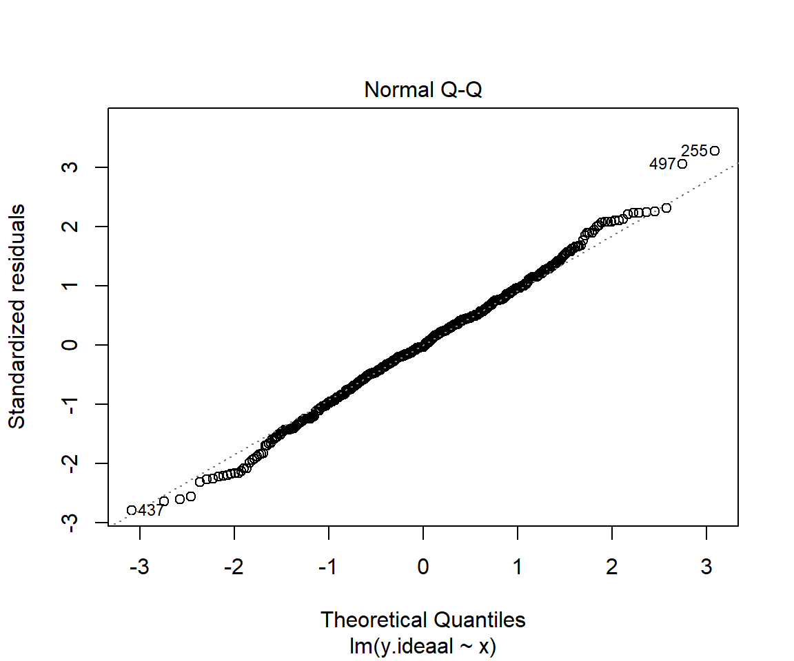
Figuur 2.3: Normal QQ grafiek voor het ideale model.
De residuen vormen hier een goede match met de diagonale lijn. De residuen lijken dus normaal verdeeld te zijn.
2.1.3 Scale-Location
Met deze grafiek (ook wel Spread-Location genoemd) kun je zien of residuen gelijkelijk zijn verdeeld over de reeksen van voorspellers. Zo kun je de aanname van gelijke variantie (homoscedasticiteit) controleren. Het is goed als je een horizontale lijn ziet met gelijke (willekeurige) spreidingspunten.
Deze grafiek is een meer gevoelige benadering voor het zoeken naar afwijkingen van de aanname van constante variantie. Als je significante trends in de rode lijn op deze grafiek ziet, dan is dat een aanwijzing dat de residuen (en dus fouten) een niet-constante variantie hebben. Dat wil zeggen, de aanname dat alle \(\epsilon_i\) dezelfde variantie \(\sigma^2\) hebben, is niet waar.
plot(lm.ideaal, which =3)
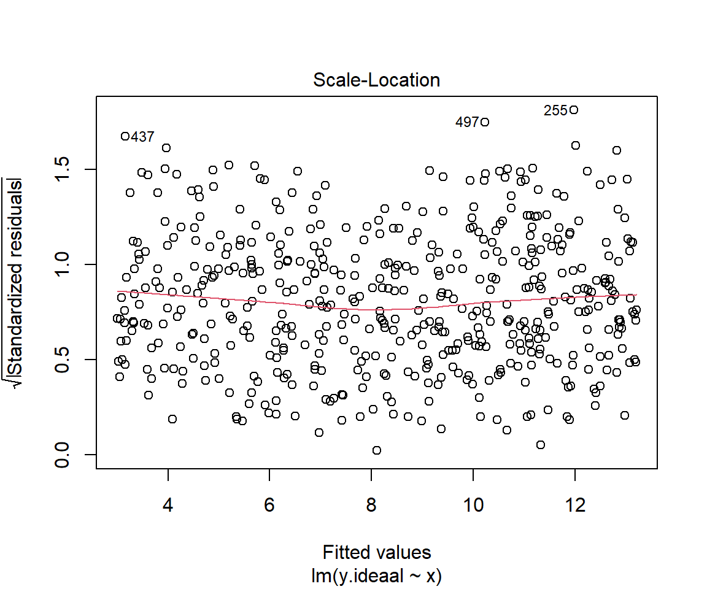
Figuur 2.4: Scale-Location grafiek voor het ideale model.
Een horizontale rode lijn is ideaal en geeft aan dat de residuen een uniforme variatie hebben binnen het bereik van de verklarende variabele. Naarmate de residuen zich verder van elkaar verspreiden, gaat de rode lijn omhoog.
De lijn is hier behoorlijk plat, wat betekent dit de fouten een constante variantie hebben, zoals gewenst.
2.1.4 Cook’s Distance
Cook’s Distance, vaak aangeduid met \(D_i\), wordt gebruikt om invloedrijke gegevenspunten te identificeren die een negatief effect kunnen hebben op uw regressiemodel. Het feit dat een gegevenspunt invloedrijk is, betekent niet dat het noodzakelijkerwijs moet worden verwijderd. Controleer eerst of het gegevenspunt gewoon onjuist is vastgelegd of dat er iets vreemds aan het gegevenspunt is dat op een interessante bevinding kan wijzen.
In wezen doet Cook’s Distance één ding: het meet hoeveel alle berekende waarden in het model veranderen wanneer gegevenspunt \(i\) wordt verwijderd.
Een gegevenspunt met een grote waarde voor Cook’s Distance geeft aan dat het de berekende waarden sterk beïnvloedt. Een algemene vuistregel is dat elk punt met een Cook’s Distance groter dan 4/n (waarbij n het totale aantal gegevenspunten is) als een uitbijter wordt beschouwd.
Met deze grafiek worden de Cook’s afstanden voor elke waarneming bepaald en in een grafiek uitgezet.
plot(lm.ideaal, which =4)
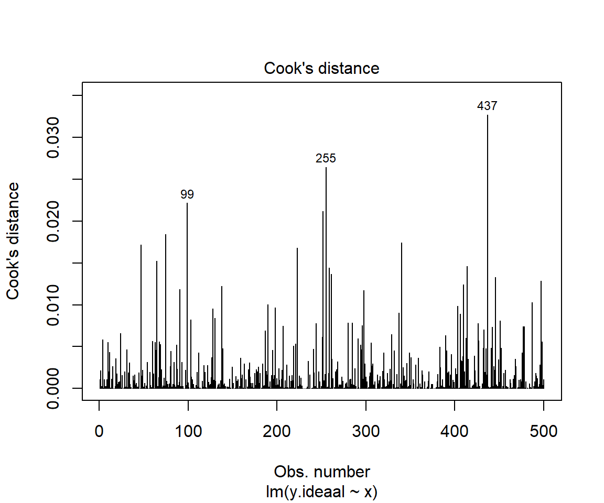
Figuur 2.5: Cook’s afstanden voor elke waarneming van het ideale model.
2.1.5 Residuals vs Leverage
Leverage is een maatstaf voor de mate waarin een waarneming het passen (fit) van het model beinvloedt. Het is een ééncijferige samenvatting van hoe verschillend de fit van het model zou zijn als de betreffende waarneming niet mee zou tellen.
Punten met een hoog residu (=slecht beschreven door het model) en een hoge leverage (= grote invloed op de modelfit) zijn uitschieters. Ze trekken het model weg van de rest van de gegevens en lijken niet echt te passen bij de rest van de gegevens.
Deze grafiek helpt je om invloedrijke waarnemingen te vinden als ze er zijn. Niet alle uitschieters zijn invloedrijk in de lineaire regressie-analyse. Zelfs als de gegevens extreme waarden hebben, zijn ze mogelijk niet van invloed op het bepalen van een regressielijn. Dat betekent dat de resultaten niet veel anders zouden zijn als ze in- of uitgesloten zouden worden bij de analyse. Ze volgen in de meeste gevallen de trend en ze doen er niet echt toe; ze zijn niet invloedrijk. Aan de andere kant kunnen sommige gevallen zeer invloedrijk zijn, zelfs als ze binnen een redelijk bereik van de waarden lijken te liggen. Dit kunnen extreme gevallen zijn voor een regressielijn en kunnen de resultaten wijzigen wanneer ze zouden worden uitgesloten bij de analyse. Een andere manier om het te zeggen is dat ze in de meeste gevallen niet aansluiten bij de trend.
plot(lm.ideaal, which =5)
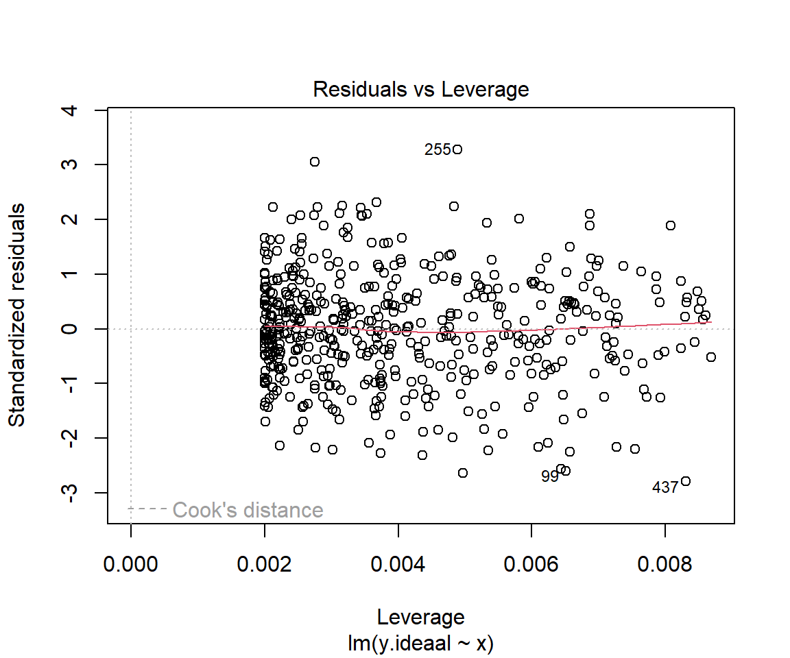
Figuur 2.6: Residuals-Leverage grafiek voor het ideale model.
Deze grafiek is een goed voorbeeld dat er geen bewijs voor uitschieters is. De gestippelde Cook’s afstandslijnen zijn zelfs niet aanwezig in de grafiek. Geen van de punten komt in de buurt van zowel een groot residu als een grote leverage.
2.1.6 Cook’s dist vs Leverage
In deze grafiek zijn contouren van gestandaardiseerde residuen die even groot zijn, lijnen door de oorsprong. De contourlijnen zijn gelabeld met de magnitudes.
De afstand van Cook is groot als de waarneming een groot residu heeft of als deze een grote invloed op het model uitoefent.
plot(lm.ideaal, which =6)
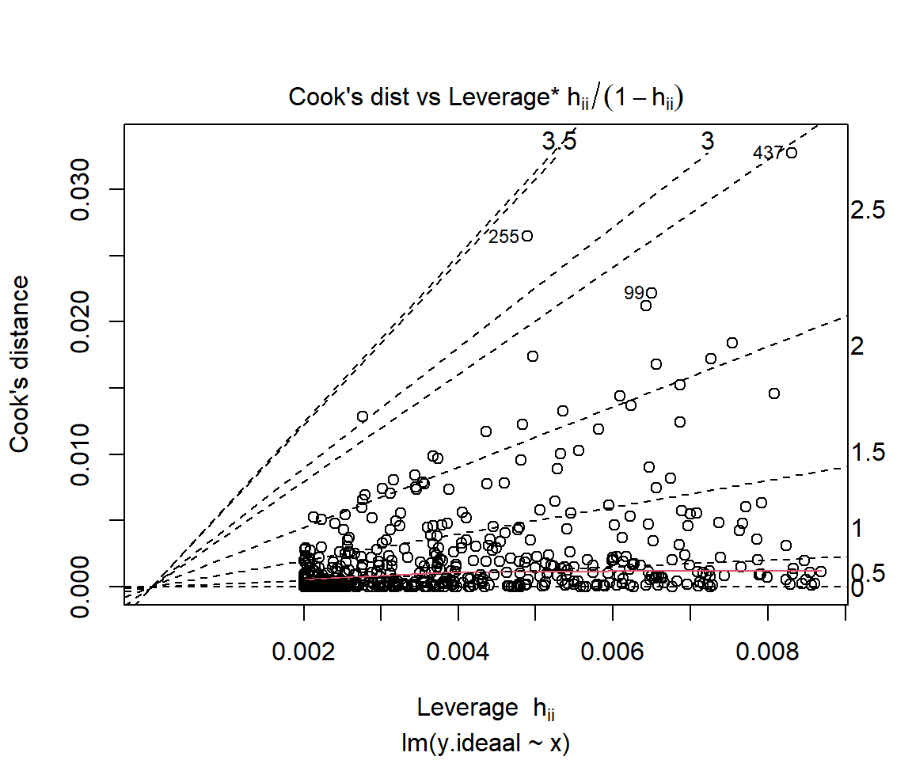
Figuur 2.7: Cook’s distance-Leverage grafiek voor het ideale model.
2.1.7 Samenvatting
De diagnostische grafieken geven informatie over het model en de gegevens. Het kan zijn dat het gebruikte model niet de beste manier is om de gegevens te begrijpen en dat er waardevolle informatie in de data is achtergebleven. In dat geval wil je misschien terug naar je theorie en hypothesis. Is er werkelijk een lineaire relatie tussen de onafhankelijke variabele(n) en de afhankelijke variabele? Misschien moet er bijvoorbeeld een kwadratische term worden opgenomen. Of geeft een logaritmische transformatie het verschijnsel dat je wilt modelleren beter weer. Of er is misschien een belangrijke variabele die niet in het model is opgenomen? Of misschien waren de gegevens systematisch vertekend (systematische ruis) bij het verzamelen hiervan, waardoor je daar dan een nieuwe methode voor moet ontwerpen.
Hier is een voorbeeld waarbij niet-lineaire trends in de gegevens aanwezig zijn. Dit voorbeeld is gemaakt om seizoensgegevens na te bootsen.
y.gebogen <-5*sin(0.6* x) +0.1* x +rnorm(n, sd =2)# Scatterplot van de dataggplot(mapping =aes(x, y.gebogen)) +geom_point() +stat_smooth(method ="lm") +stat_smooth(method ="loess", span =0.1, colour =I("red"))
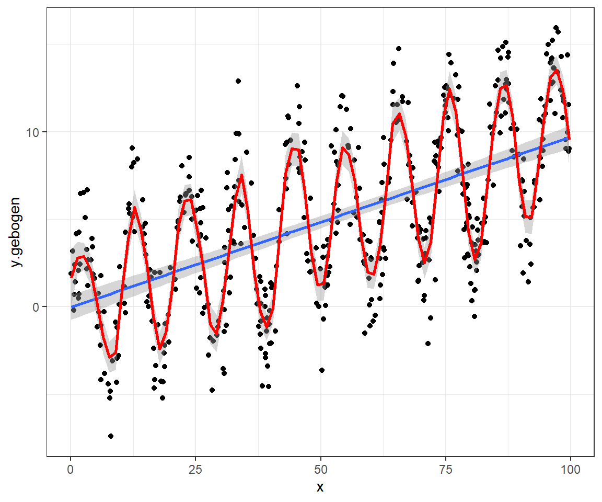
Figuur 2.8: Gegevens met een seizoentrend
De blauwe lijn geeft het lineaire model weer. De rode curve is een niet-lineaire aanpassing die de gemiddelde waarde van y beter modelleert bij elke waarde van x. Merk op dat het lineaire model er niet in slaagt de duidelijke niet-lineaire trend vast te leggen die aanwezig is in de gegevens. Dit veroorzaakt enorme problemen voor onze gevolgtrekking. Kijk naar de grijze betrouwbaarheidsband die de regressielijn omringt. Als aan de standaardaannames voor lineaire regressie wordt voldaan, zou deze band met hoge waarschijnlijkheid de gemiddelde waarde van y bevatten bij elke waarde van x. d.w.z. de grijze banden rond de blauwe curve zouden grotendeels de rode curve moeten bevatten. Dit gebeurt uiteraard niet. De rode curve ligt bijna altijd ver buiten de grijze banden rond de blauwe regressielijn.
lm.gebogen <-lm(y.gebogen ~ x)plot(lm.gebogen, which =1)
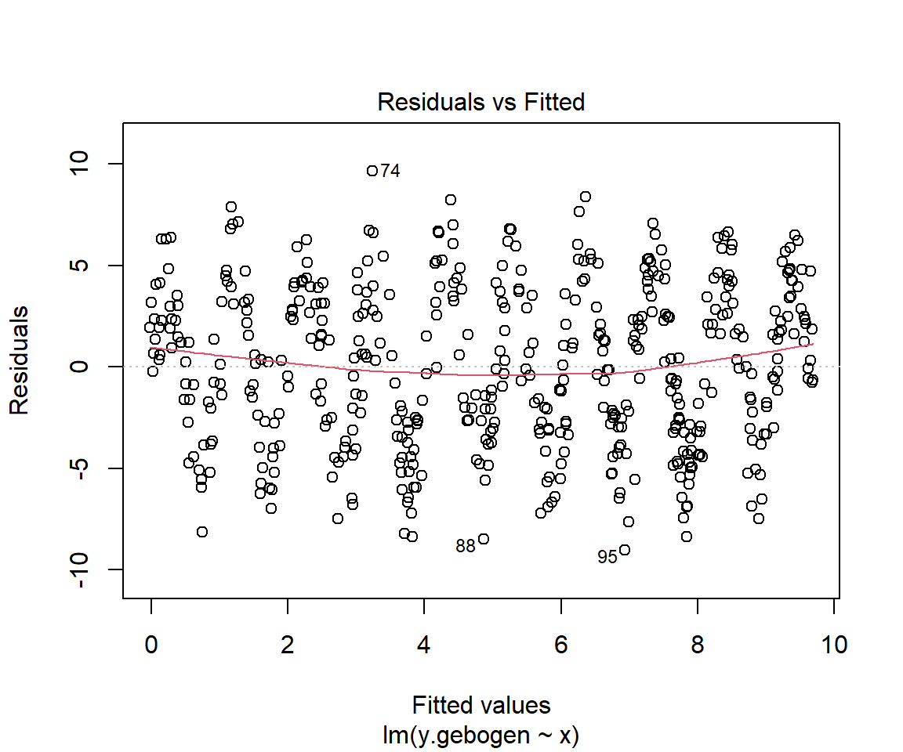
Figuur 2.9: Residuals-fitted voor het gekromde model.
Visueel is een duidelijke trend in de residuen te zien. Ze hebben een periodieke trend. Helaas doet de scatterplot smoother die wordt gebruikt om de rode lijn te construeren hier geen goed werk. Dit is een geval waarin de keuze van buurtgrootte (hoeveel punten er nodig zijn om het lokale gemiddelde te berekenen) te groot wordt geacht om de trend die we visueel waarnemen vast te leggen. Vertrouw die rode curve niet altijd.
plot(lm.gebogen, which =2)
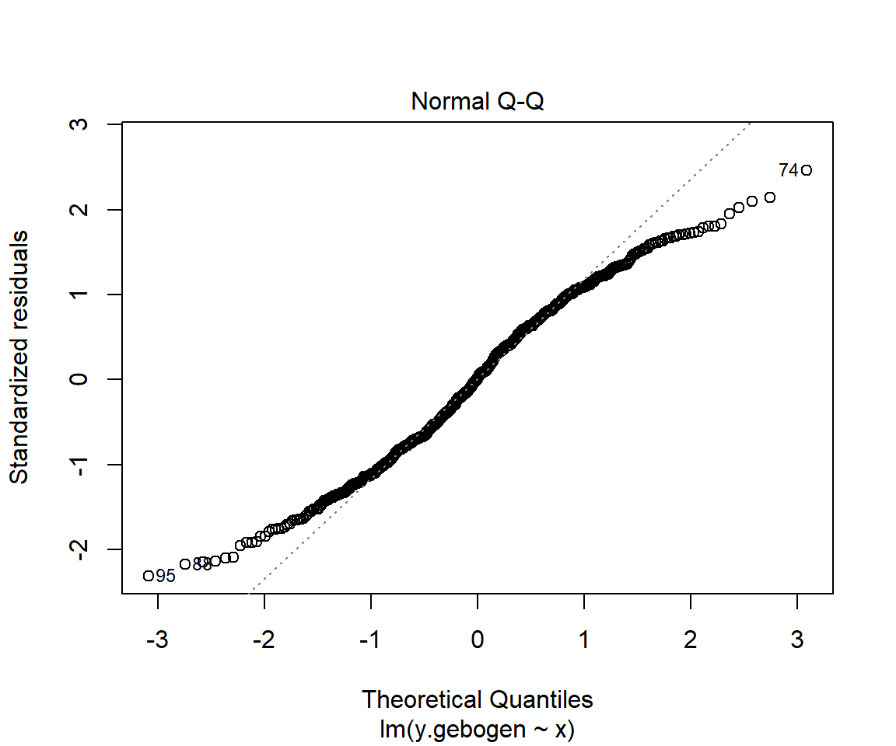
Figuur 2.10: Normal Q-Q voor het gekromde model.
In de QQ-plot is te zien dat de residuen afwijken van de diagonale lijn in zowel de bovenste als de onderste staart. Deze grafiek gaf aan dat de staarten ‘lichter’ zijn (kleinere waarden hebben) dan wat we zouden verwachten onder de standaardmodelleringsaannames. Dit wordt aangegeven door de punten die een “plattere” lijn vormen dan de diagonaal.
2.2.2 Niet constante variantie
Voor dit voorbeeld worden gegevens gegenereerd waarbij de foutvariantie toeneemt met \(x\). Het model wordt
y.toenemend <-3+0.2* x + (1+ x /25) *rnorm(n, sd =3)plot(x, y.toenemend, ylab ="y")
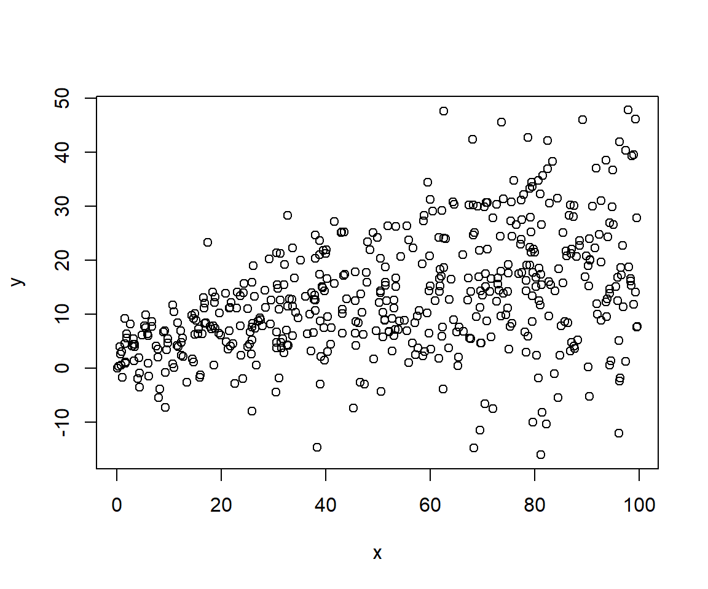
Figuur 2.11: Gegevens met een toenemende variantie.
lm.toenemend <-lm(y.toenemend ~ x)plot(lm.toenemend, which =1)
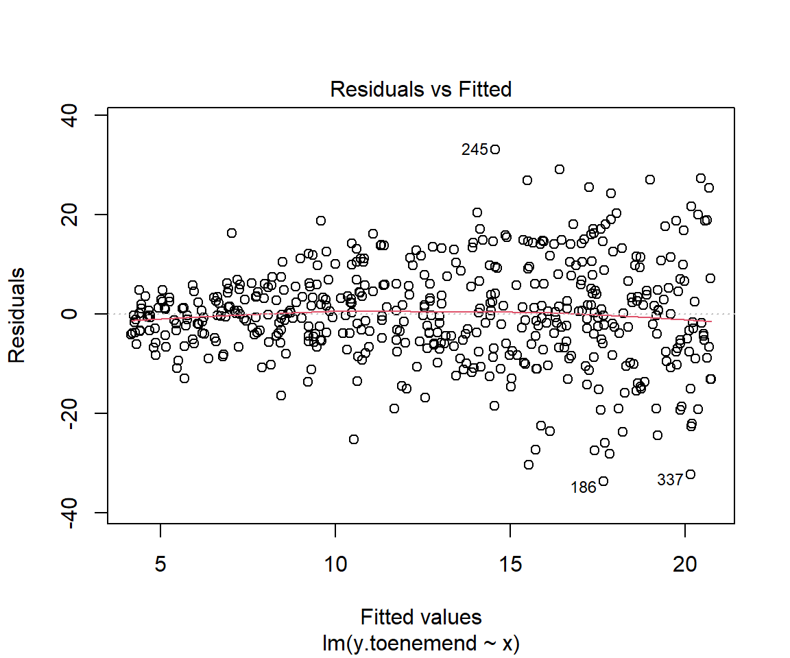
Figuur 2.12: Residuals-fitted voor het model met toenemende variantie.
Als je naar deze plot kijkt, zie je dat er een duidelijk “trechter”-fenomeen is. De verdeling van de residuen is vrij goed geconcentreerd rond 0 voor kleine aangepaste waarden, maar ze worden meer en meer verspreid naarmate de aangepaste waarden toenemen. Dit is een voorbeeld van “toenemende variantie”.
plot(lm.toenemend, which =2)
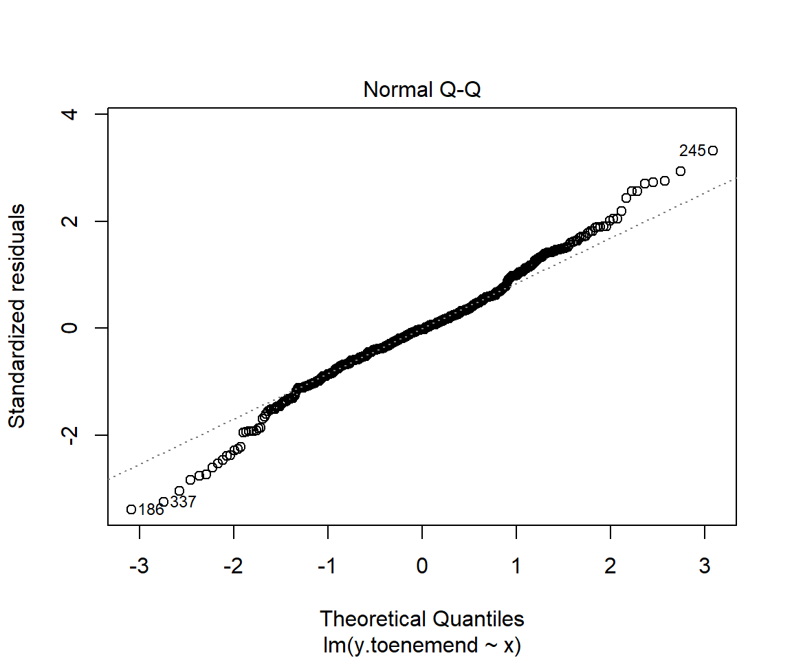
Figuur 2.13: Normal Q-Q voor het model met toenemende variantie.
In deze Q-Q plot wijken de residuen af van de diagonale lijn in zowel de bovenste als de onderste staart. Hier zijn de staarten ‘zwaarder’ (hebben grotere waarden) dan je zou verwachten op basis van de standaardmodelleringsaannames. Dit wordt aangegeven door de punten die een “steilere” lijn vormen dan de diagonaal.
plot(lm.toenemend, which =3)
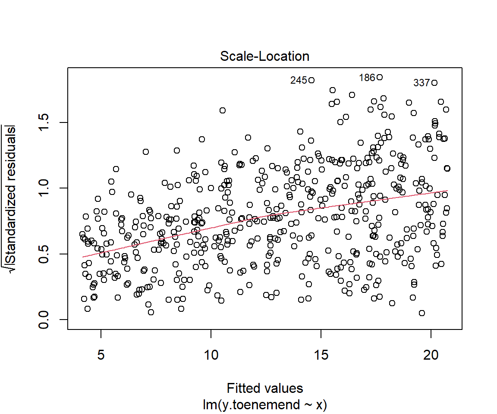
Figuur 2.14: Scale-Location voor het model met toenemende variantie.
Let op de duidelijke opwaartse helling in de rode trendlijn. Dit wijst op een niet-constante variantie.
De standaardaanname van lineaire regressie is dat de variantie constant is over het gehele bereik. Als deze aanname niet geldig is, zoals in dit voorbeeld, mag je de betrouwbaarheidsintervallen, voorspellingsbanden of de p-waarden in deze regressie niet geloven.
2.2.3 Uitschieters
set.seed(12345)y.aangepast <- y.ideaal[1:n]x.aangepast <- x[1:n]# Selecteer 10 willekeurige punten om aan te passento.aangepast <-sample(1:length(x.aangepast), 10)y.aangepast[to.aangepast] <--1.5* y.aangepast[to.aangepast] +3*rt(10, df =3)x.aangepast[to.aangepast] <- x.aangepast[to.aangepast] *2.5# Fit regression and display diagnostic plotlm.aangepast <-lm(y.aangepast ~ x.aangepast)plot(lm.aangepast, which =5)
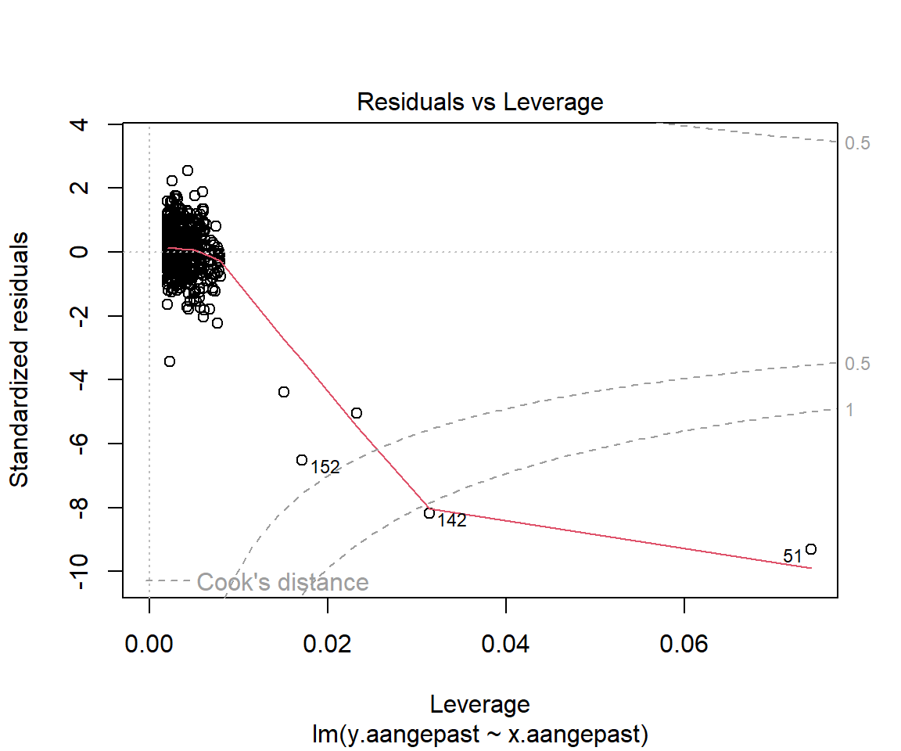
In deze grafiek zis te zien dat er verschillende punten zijn met een hoge restwaarde en een hoge hefboomwerking (leverage). De punten die dicht bij of buiten de gestippelde curven liggen, zijn de moeite waard om verder te onderzoeken.
Figuur 2.15: De vier diagnostische grafieken die standaard getoond worden.
Je ziet vaak nummers bij sommige punten in deze grafieken. Dat zijn extreme waarden op basis van elk criterium en geidentificeerd door de rijnummers in de gegevensverzameling. Wanneer sommige nummers in alle vier de grafieken verschijnen is er reden om de waarneming individueel te bekijken. Is er iets speciaals met dit punt aan de hand? Of is er een fout gemaakt bij het invoeren van de gegevens?
Residuals vs Fitted
plot(model.sparen, which =1)
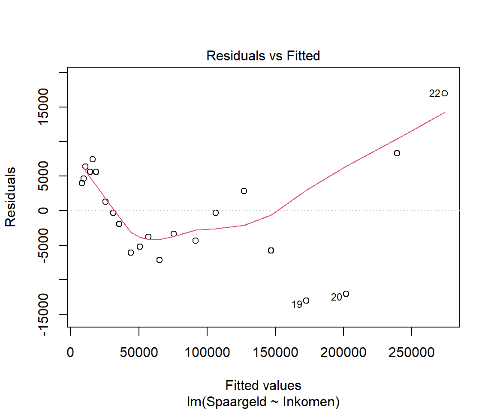
Figuur 2.16: Residuals-Fitted.
De residuen vertonen een gebogen patroon (paraboolachtig). Dit zou kunnen betekenen dat je een beter model kunt krijgen door een kwadratische term aan het model toe te voegen.
Normal Q-Q
plot(model.sparen, which =2)
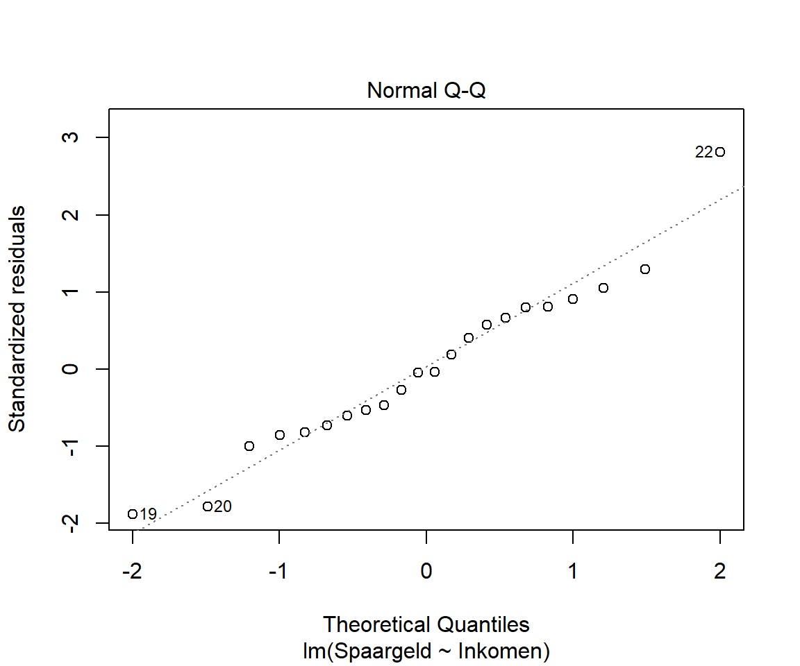
Figuur 2.17: Diagnostische grafiek Normal Q-Q.
De punten volgen de stippellijn goed, behalve waarneming 22. De residuen van het model voldoen hiermee aan de test voor een normale verdeling.
Scale-Location
plot(model.sparen, which =3)
Figuur 2.18: Diagnostische grafiek Scale-Location.
Tot ongeveer 100000 is sprake van homoscedasticiteit (dus uniforme variatie), daarna wordt het heteroscedasticiteit.
Cook’s distance
plot(model.sparen, which =4)
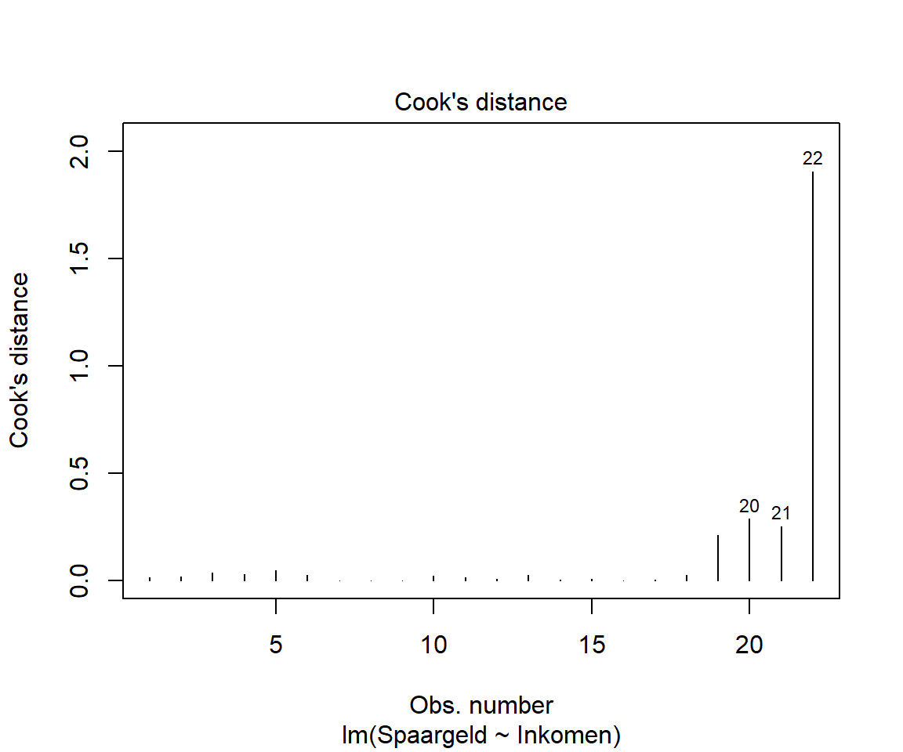
Figuur 2.19: Diagnostische grafiek Cook’s distance.
Duidelijk is te zien dat waarneming 22 afwijkt van de rest en hierdoor mogelijk het model slecht beinvloedt. Afhankelijk van de oorzaak kun je het punt verwijderen of de waarde corrigeren. Maar het is natuurlijk ook mogelijk dat het een geldig punt is.
Opmerking
Alternatief
plot(cooks.distance(model.sparen), pch = 16, col = "blue")
Residuals vs Leverage
plot(model.sparen, which =5)
Figuur 2.20: Diagnostische grafiek Residuals-Leverage.
De gestippelde lijnen zijn de Cooks afstanden. De interessegebieden zijn de gebieden buiten de stippellijn in de rechterbovenhoek of rechteronderhoek. De punten hierin kunnen een grote invloed hebben op het regressiemodel. Dergelijke punten hebben een hoge leverage of de potentie voor beinvloeding van het model is groter wanneer je die punten uitsluit.
In dit voorbeeld heeft waarneming 22 grote invloed op het regressiemodel.
Cook’s dist vs Leverage
plot(model.sparen, which =6)
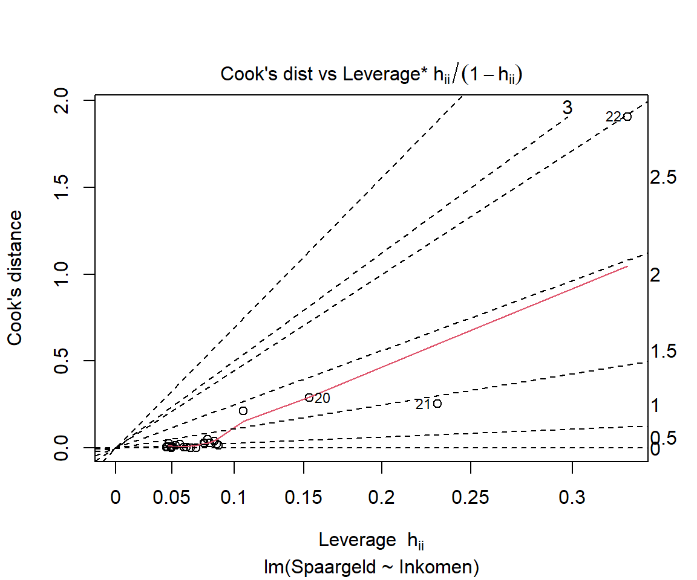
Figuur 2.21: Diagnostische grafiek Cook’s dist vs Leverage.
2.4 Niet grafische methoden
Durbin Watson Statistiek (DW)
Deze test wordt gebruikt om autocorrelatie te controleren. De waarde ligt tussen 0 en 4. Een DW=2 waarde vertoont geen autocorrelatie. Een waarde tussen 0 < DW < 2 impliceert echter positieve autocorrelatie, terwijl 2 < DW < 4 negatieve autocorrelatie impliceert.
car::durbinWatsonTest(lm.ideaal)
lag Autocorrelation D-W Statistic p-value
1 -0.00932 2.02 0.902
Alternative hypothesis: rho != 0
Variantie-inflatiefactor (VIF)
Deze statistiek wordt gebruikt om multicollineariteit te controleren. VIF <=4 impliceert geen multicollineariteit, maar VIF >=10 suggereert hoge multicollineariteit. Als alternatief kunt u ook naar de tolerantiewaarde (1/VIF) kijken om de correlatie in IV’s te bepalen. Daarnaast kun je ook een correlatiematrix maken om collineaire variabelen te bepalen.
Breusch-Pagan / Cook Weisberg-Test
Deze test wordt gebruikt om de aanwezigheid van heteroskedasticiteit te bepalen. Als je p < 0,05 vindt, verwerp je de nulhypothese en concludeer je dat heteroskedasticiteit aanwezig is.
Kassambara, A., ‘Machine Learning Essentials: Practical Guide in R’, 1st edition dr., (2018).
12.
University of Virginia, ‘Understanding Diagnostic Plots for Linear Regression Analysis | University of Virginia Library Research Data Services + Sciences’, https://data.library.virginia.edu/diagnostic-plots/.